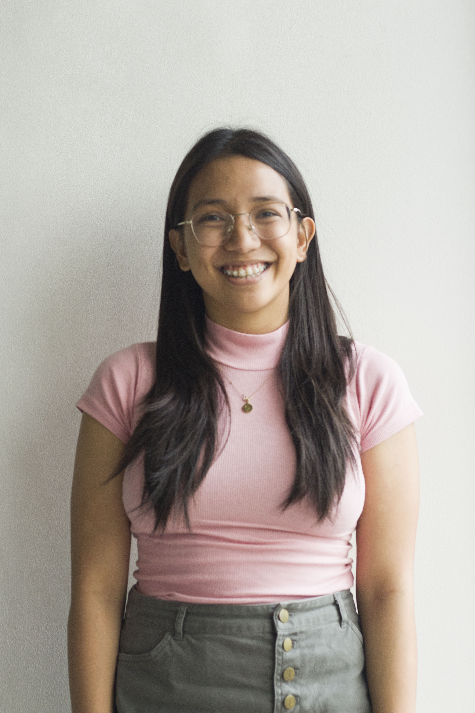

Ang May-Akda
Si Bianca Aguilar ay isang masipag na tao, kapuna-puna sa co-curriculars at aktibidad niya. Siya ay isang Grade 12 na estudyante taga De Lasalle Santiago Zobel, Vermosa ipinanganak noong October 3, 2001. Tumira siya sa Las Pinas, kasama ng Nanay at ang kanyang kapatid. Siya ay nanghihikayat sa kanyang mga kapatid at maging sa kanyang sarili na maging responsable at maging masipag kasi siya ay ang pinakamatanda. Mahilig siya sa pagbasa, pagkanta, at pagsayaw. Sa kinabukasan, gusto siya maging isang graphic designer at illustrator. Isa sa mga paboritong sipi niya ay “Maikli ang buhay ng isang tao, pero matagal ang buhay ng sining niya ”. Siya rin ay isang “perfectionist” na sa tuwing may gagawain siya ay kailangan maganda at maayos ito.